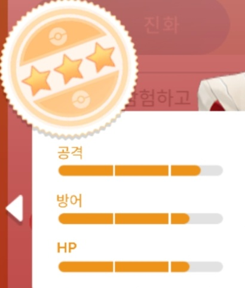
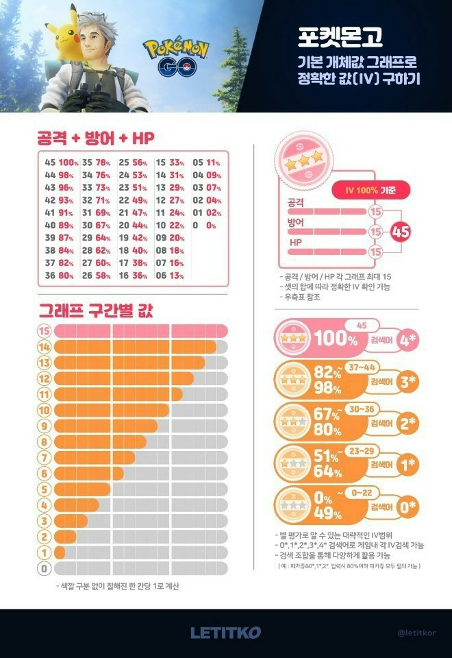

상세한 설명
우리는 앞서 1장에서 용어들과 함께 개체값의 특성에 대해 간단히 알아보는 시간을 가졌습니다.
이번에는 개체값이 왜 중요한지에 대해 알아보고, 개체값 표를 눈에 익히고,
마지막으로 자신만의 고개체 기준을 정해봅시다.
개체값이 중요한 이유
개체값은 공격, 방어, HP 에 추가로 더해지는 수치라고 했습니다.
그렇다면, 각 개체가 높을수록 포켓몬의 능력이 올라가게 되죠.
우리가 알 수 있는 사실은 개체값이 높을수록 낼 수 있는 효율이 높다는 것 입니다.
특히나 개체값의 성능 차이는 레이드에서 쉽게 나타납니다.
레이드를 하실때 많은 사람이 함께 할 때는 차이가 거의 없습니다.
하지만, 최소 계정으로 레이드를 진행할 경우 포켓몬 한마리, 한마리의 능력치 차이에 따라 레이드 성공여부가 갈리게 됩니다.
그러면 개체가 높은 것을 키우는 것이 게임 내의 자원인 "별의모래"를 합리적으로 소비하게 되겠죠?
그런데! 초보분들이 많이하는 실수가 있습니다.
개체 조사를 하였을 때 별이 3개면 이 포켓몬을 양육하려는 경향이 있습니다.
우선 대충 겉으로만 두 사진을 비교해봅시다.


대충 봤을 때 두 개체가 모두 3성짜리 개체지만, 서로 다르다는 느낌이 오실겁니다.
오른쪽 사진이 더 개체가 높습니다.
그렇다면 높은 개체의 기준은 무엇일까요? 이 질문에 대해서는 다음에 나오는 개체값 표를 익히면 이해가 쉬워집니다.
개체값 표
위 사진에서는 개체값을 표로 나타내었습니다.
하지만 저 표를 보고 항상 정확한 개체를 알기 힘듭니다.
개체값을 이해하기 편하게 %로 환산하는 방법을 배워봅시다.
우선 아래의 사진을 천천히 살펴봅시다.

이해가 되시나요?, 정확히 이해하지 못하셨을 수 있으니 정확한 설명 드리겠습니다.
일단 사진에 "그래프 구간별 값"이라고 써진 부분을 눈에 익혀두시면, 아래 설명을 이해 하실때 수월하실 겁니다.
앞서 개체는 0 ~ 15의 수치로 이루어져 있다고 설명 드렸습니다.
그러면 최대 수치는 15, 최소는 0이 됩니다.
공격, 방어, HP 이렇게 3개가 게체를 이루고 있기 때문에
최대 수치는 각각 15,15,15 입니다.
그러면 공격, 방어, HP의 수치를 모두 더해봅시다.
만약 공격, 방어, HP 수치가 (15, 15 ,15) 라면 이를 전부 더했을 때 45가 됩니다.
그리고 사진에서 "공격 + 방어 + HP"라고 쓰여진 부분에 검은색 글씨로 쓰여진 숫자를 보시면,
0 ~ 45까지의 숫자가 쓰여 있을 겁니다.
우리는 아까 수치를 전부 더했을 때 45가 되었죠?
그러면 사진에서 숫자 45를 찾으면 옆에 붉은색으로 "100%" 라고 쓰여 있는 것을 보실 수 있습니다.
즉, (15, 15, 15)의 수치를 가진 포켓몬의 개체값은 100%라는 것입니다.
자, 그러면 다른 예시로 개체값이 (15, 11, 15)인 포켓몬은 "몇 %" 일까요?
빠르게 풀이 해보면 각 수치의 합은 41이므로 표에서 찾아보면 91%라는 것을 알 수 있습니다.
저 표에서 몇가지 개체는 외워두면 나중에 도움이 되실겁니다.
차근차근 저 표를 보는 방법을 익히고 몇가지 개체는 외우도록 합시다.
자신 만의 고개체 기준
높은 개체 (고개체)의 기준은 사람마다 다를 것입니다
누군가는 90%를 넘기면 높다고 볼 것이고, 또 다른 누군가는 98% 이상만 고개체라고 볼 것입니다.
통상적으로, 평균적으로 사람들은 96% 이상을 고개체로 취급합니다.
하지만, 사람마다 처한 상황과 가치관이 다르죠.
따라서, 자신이 고개체로 취급하는 기준을 만들고 게임을 플레이 하며 포켓몬을 양육하면 합리적이고 효율적일것 입니다.
이 글을 읽고 나서 초보분들이 자신 만의 기준을 만들 수 있기를 바랍니다 ^^
(참고: 필자는 주로 공격 개체 15 이상, 96% 이상의 포켓몬을 양육합니다.)